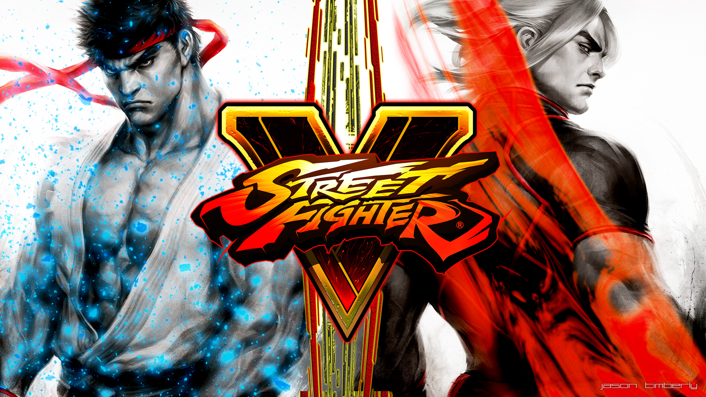

Street Fighter 5
imagem do jogo Street fighter 5
Street Fighter V[a] é um jogo de luta desenvolvido pela Capcom e Dimps e publicado pela Capcom para playStation 4 e Microsoft Windows em 2016.Semelhante aos jogos anteriores da série Street Fighter, Street Fighter V apresenta um sistema de jogabilidade de luta de rolagem lateral. O jogo também introduz o "V-Gauge", que se constrói à medida que o jogador recebe ataques e adiciona três novas habilidades. O jogo apresenta 16 personagens no lançamento, sendo quatro deles novos na série. Um modo de história e 30 caracteres adicionais foram adicionados através de atualizações e conteúdo para download.
De acordo com a Capcom, o jogo é um console PlayStation 4 exclusivo devido à Sony e à Capcom terem "a mesma visão para o potencial de crescimento no espaço do jogo de luta". O jogo é alimentado por Unreal Engine 4, e teve um teste beta antes de seu lançamento. Após o lançamento, o jogo recebeu críticas mistas, com críticos elogiando os gráficos e a jogabilidade do jogo, mas criticando sua falta de conteúdo e personagens, bem como seus problemas técnicos, como servidores quebrados no lançamento e bugs de software. A Capcom esperava que o jogo vendesse pelo menos 2 milhões de cópias até o final de seu ano fiscal de 2016, uma meta que foi perdida, vendendo apenas 1,4 milhão de cópias em 31 de março de 2016. A partir de 30 de setembro de 2021, as vendas acumuladas do jogo atingiram 6 milhões, tornando-se o segundo jogo de Street Fighter mais vendido em consoles domésticos, de acordo com o relatório fiscal platinum da Capcom. [3]
Sua atualização, Street Fighter V: Arcade Edition, foi lançada em 16 de janeiro de 2018, e foi recebida de forma mais positiva, com melhorias na interface e conteúdo do usuário, em particular seus modos single-player e a adição do tão requisitado Modo Arcade. Uma segunda atualização, intitulada Street Fighter V: Champion Edition, inclui todos os lutadores, palcos e a maioria dos figurinos lançados através de sua quarta temporada. Foi lançado em 14 de fevereiro de 2020, recebendo uma versão física na forma do disco original de Street Fighter V, contendo um código de voucher para baixar o conteúdo restante.
Street Fighter V continua a jogabilidade de luta 2D de seus antecessores, na qual dois lutadores usam uma variedade de ataques e habilidades especiais para nocautear seu oponente. O jogo apresenta o medidor EX introduzido em Street Fighter III, que se constrói à medida que o jogador aterrissa ataques e pode ser usado para energizar movimentos especiais ou executar super combos conhecidos como Critical Arts, embora os Ataques de Foco do jogo anterior tenham sido removidos. A novidade deste jogo é o "V-Gauge", que se constrói à medida que o jogador recebe ataques e adiciona quatro novas técnicas: V-Skills, V-Reversals, V-Triggers e V-Shifts. V-Skills são ataques especiais exclusivos para cada lutador; por exemplo, Ryu pode parry um ataque enquanto M. Bison pode refletir projéteis, alguns dos quais constroem V-Gauge quando executados com sucesso. As inversões V permitem que os jogadores usem uma seção do V-Gauge para executar um movimento de contra-ataque enquanto são atacados. Da mesma forma, v-Shifts usam uma seção do V-Gauge para desviar e potencialmente combater um ataque de entrada. Finalmente, os V-Triggers usam todo o V-Gauge para permitir que o jogador execute uma habilidade única, como um aumento temporário de dano para as bolas de energia de Ryu ou hits adicionados aos ataques de Chun-Li. Além disso, o Stun Meter, que está presente desde Street Fighter III, é visível sob as barras de saúde neste jogo. O Medidor de Atordoamento aumenta ao receber ataques consecutivos e fará com que o jogador fique atordoado se preenchido; assim, incentiva os jogadores a jogar ofensivamente quando o Medidor do adversário está perto de cheio. O jogo também possui uma arena interativa, mostrando animações especiais quando um jogador é derrotado na beira da arena. [4][5]
O jogo contou com dezesseis personagens no lançamento, quatro dos quais eram novos na série Street Fighter. Após o lançamento do jogo, vários personagens adicionais foram desenvolvidos e adicionados ao jogo através de atualizações, divididos entre várias "temporadas" de conteúdo. [6] Esses personagens, entre outros conteúdos pós-lançamento, podem ser comprados através de moeda real, ou "Fight Money", ganhos através da jogabilidade. [7]